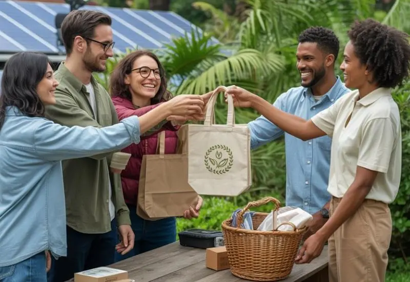

Reuse more
Choose items that can be used again and again instead of reaching for disposable options every time.

A greener lifestyle is not a one-person effort. It grows when everyday choices become shared habits.
DISCOVER OUR STORY ↓HAREL ECO FRIENDLY PRODUCT is inspired by a simple belief: caring for the environment can be part of ordinary life. It can look like bringing a reusable bag, choosing a refillable bottle, or finding a new purpose for materials we already have.
Our collection brings together practical, reusable, and nature-inspired products that encourage people to think about the impact of everyday items.
Small actions become meaningful when we inspire one another.
Choose items that can be used again and again instead of reaching for disposable options every time.
Look at the materials, purpose, and useful life of the things we bring into our daily routines.
Encourage friends, families, and communities to make small changes together.